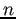

Siguiente: Parámetros extrÃnsecos e intrÃnsecos Subir: Formación de la imagen Anterior: Introducción Índice General
Consideremos la proyección central de puntos en el espacio sobre un plano. Sea el centro de proyección (centro de la cámara o centro óptico) como origen de un sistema de coordenadas euclÃdeo, el plano de la imagen o plano focal,  el punto principal y considerando que el plano de la imagen está posicionado enfrente del centro de la cámara. Bajo el modelo de cámara oscura, el punto en el espacio, es mapeado a un punto en el plano de la imagen dado por la intersección del mismo, con la lÃnea que une con el centro de proyección como se puede observar en la Fig. 2.15a. Mediante el análisis geométrico de la Fig. 2.15b, se puede calcular que el punto de la escena es mapeado al plano de la imagen en el punto . Ignorando la última componente, el mapeo del sistema de coordenadas global al de coordenadas de la imagen (un mapeo de un espacio EuclÃdeo a uno en ) puede expresarse mediante la notación (2.13), asumiéndose que el origen de coordenadas en el plano de la imagen se encuentra en el punto principal.
|
|
Si los puntos son representados mediante una representación homogénea, la proyección central puede expresarse como un mapeo lineal entre coordenadas homogéneas y la notación (2.13) puede re-expresarse como en la ecuación (2.14).
Si se denota con
al punto de la escena representado por el vector homogéneo
,
 al punto en el plano de la imagen representado por un vector de 3 dimensiones homogéneo y a la matriz de proyección de la cámara homogénea de
, la expresión 2.14 puede ser escrita como
al punto en el plano de la imagen representado por un vector de 3 dimensiones homogéneo y a la matriz de proyección de la cámara homogénea de
, la expresión 2.14 puede ser escrita como
Si bien anteriormente se asumió que el origen de coordenadas en el plano de la imagen se encuentra en el punto principal, en la práctica generalmente esto no es asÃ, por lo que la expresión 2.13 se puede convertir a una forma más general como se establece en 2.16, donde , son las coordenadas del punto principal. La expresión:
Si denotamos con
la representación de una matriz dividida en un bloque de
 (la matriz identidad ) al que se le concatena un vector columna (un vector de ceros de
) y sea la Matriz de calibración de la cámara:
(la matriz identidad ) al que se le concatena un vector columna (un vector de ceros de
) y sea la Matriz de calibración de la cámara: